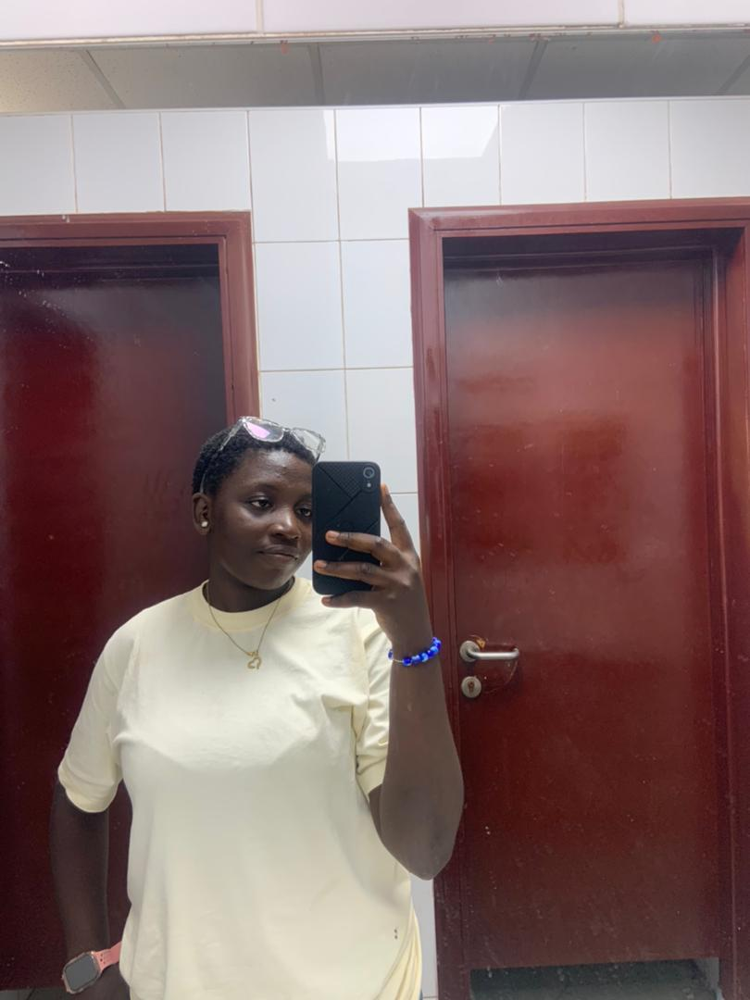

Aniwen Blessing
About Me
My name is Blessing, and I am from Nigeria. I am currently a student at BYU-Pathway Worldwide, where I am studying Computer Science. I have a strong interest in technology and software development. I enjoy learning how computers work and how programming can be used to solve real-life problems. So far, I have been developing my skills in Python, HTML, CSS, and JavaScript. Through my studies and personal projects, I have learned about programming, web development, problem-solving, and creating functional websites and applications. Becoming a software developer is a journey for me. Sometimes learning to code can be challenging and overwhelming, but I try not to give up. I see every challenge as an opportunity to learn something new and improve myself. My goal is to become a skilled software developer, build useful and innovative applications, and use technology to make a positive impact in my community and beyond.

Nigeria
Nigeria is a beautiful country located in West Africa. It is often called the “Giant of Africa” because of its large population, diverse cultures, and important role in Africa. Nigeria is made up of 36 states and the Federal Capital Territory, Abuja. The country is home to many different ethnic groups, languages, traditions, and cultures. Some of the major ethnic groups include the Yoruba, Igbo, and Hausa, among many others. Nigeria is blessed with natural resources, beautiful landscapes, talented people, and delicious foods. We are also known for our music, movies, fashion, sports, and technology. One thing I love about Nigeria is the strength and resilience of its people. Nigerians are hardworking, creative, and entrepreneurial. Despite the challenges we face, many Nigerians continue to work toward a better future. I am proud to be from Nigeria, and I hope to contribute to the growth and development of my country through education, technology, and hard work